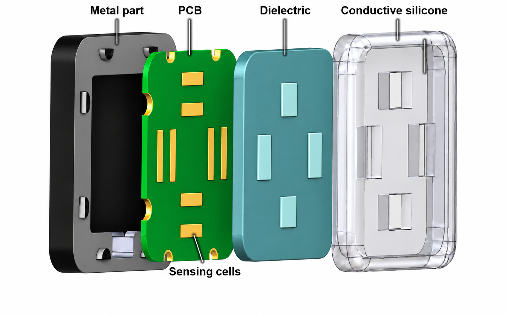

Palm Tactile Sensor Design
Using Fringing Fields
Research on a three-axis palm tactile sensor design using fringing fields.

Fringing fields and electrode arrangement
At the edges of finite electrodes, the electric field extends beyond the overlap region. This is the fringing effect. Lateral motion changes both the overlap area and the edge field, whereas compression changes the electrode gap.
An initial lateral offset between the upper and lower electrodes was introduced to compare capacitance changes under lateral motion and compression. The calculated response includes both overlap-area and fringing-field effects.
Comparison of electrode geometries
Electrode geometries were compared at a relative permittivity of 2.75 and an applied voltage of 1 V. Length and offset were varied first, followed by comparisons of how width and gap affect lateral and compression responses.
Within the investigated range, increasing width changed the compression response more than the absolute shear response. A length of 5 mm and widths of 2–3 mm were considered as candidates based on geometry and available area. The relationship between offset and width remains a design assumption requiring further comparison.
- Electrode lengths compared
- 1–5 mm
- Electrode widths compared
- 1–5 mm
- Relative permittivity / applied voltage
- 2.75 / 1 V
- Single-electrode shear comparison
- 0.50 mm total travel
Four-channel displacement response
Differences between opposing electrode channels form the x/y signals, while the channel mean forms the compression signal. In pure-axis displacement simulations, lateral capacitance spans were 385.78 fF and 385.79 fF, and the mean increase under compression was 80.58 fF.
| Response | Applied displacement | Capacitance change |
|---|---|---|
| x differential | −0.50 to +0.50 mm | 385.78 fF span |
| y differential | −0.50 to +0.50 mm | 385.79 fF span |
| Compression mean | 0 to 0.25 mm | 80.58 fF increase |
These simulations prescribe electrode displacement. Converting the response to contact force requires mechanical evaluation and force calibration that account for dielectric deformation and assembly conditions.
Palm sensor hardware design
The electrode PCB, dielectric, conductive silicone serving as the common moving electrode, and metal support were designed. The next steps are to fabricate the module, check the channel layout and initial capacitance, and compare controlled-displacement tests against reference force measurements.